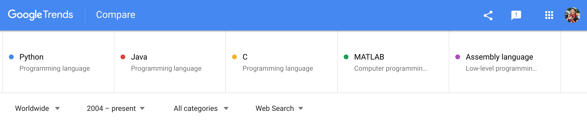
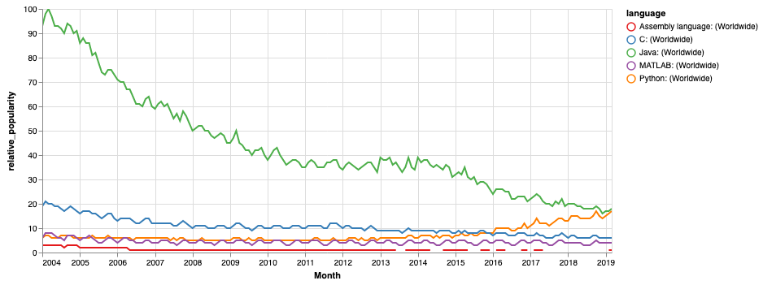
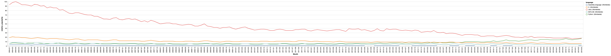
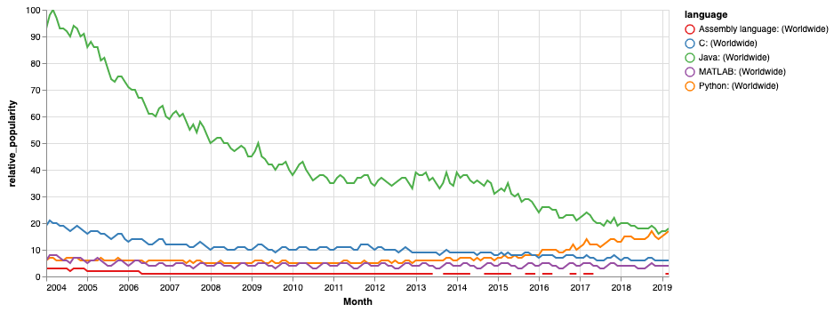

It's been three weeks into my Data Science immersive bootcamp and I'm having a blast coding again! I'm starting to get used to Python and new libraries (pandas, numpy, altair, etc.). If you're like me and you've previously programmed in other languages like C/Java, when learning any new language, there was some unlearning and relearning to do. In particular, I found myself consistently trying to reach for a for-from-until-increment-loop in Python, which doesn't exist!
While I'm getting the hang of Python, I'm starting to appreciate the ease of use, code readability, and structure of the language. This brought me to something I was curious about... What are the top programming languages today? Am I learning the "right" language? How about spoken languages?
Like anything else, what do you do when questions arise? I googled it! This is not meant to tell you what languages to pick up or to drop but mainly to fulfill my curiosity. No extensive research was done during this sitting. I did take some basic data though and played around with Altair visualizations... so read on if you'd like to learn some tips and tricks for visualization.
Note: Interactivity of the charts below are not available right now. This is something I look to fix in this post later. This is an known issue when converting Jupyter notebook to HTML files, interactivity is lost. Currently no package that uses jupyterlab frontend extensions will render correctly in nbconvert. In the meantime, links to videos are included to see this interactivity. Of course, you can run your own code to try them out on your system.
(Interactive) Multi-series Line Chart - with color and chart size modification
(Interactive) Horizontal Stacked Bar Chart - with tooltip, selection, and filtering
Programming Languages
How many programming languages exist? There doesn't seem to be a definite answer amongst different sources I looked at... let's just say a lot (maybe somewhere between 500 and 2000). There are two existing indexes that I found tracking programming language popularity.
- TIOBE Index - based on number of search engine results for queries containing the name of the language
- PYPL - PopularitY of Programming Language - based on how often language tutorials are searched on Google
I tried using Google Trends myself, on programming languages that I've learned and used in the past. Retrieved 01-Apr-2019.
Retrieve Data
At Google Trends, I searched the following 5 different languages for comparison worldwide from 2004 to now, and downloaded the data for interest over time.

Import libraries and data
import pandas as pd
import altair as alt
alt.renderers.enable('notebook')
RendererRegistry.enable('notebook')
# header that I want is on row 2
interest_over_time = pd.read_csv('interest_over_time.csv', header = 1)
Google trends does not return absolute search counts. Instead, it gives a number to compare popularity between search terms. I'm referring to this as relative_popularity. This is achieved by the number of searches (for any search term) divided by the total number of searches on Google, for the chosen geography and time range, then scaled (0 to 100) based on the all search terms. For example, Java (with 100 in 2004-03) was the most popular between all five languages worldwide from 2004-present. All other values can be treated relative to that.
interest_over_time.head() # peek into data
| Month | Python: (Worldwide) | Java: (Worldwide) | C: (Worldwide) | MATLAB: (Worldwide) | Assembly language: (Worldwide) | |
|---|---|---|---|---|---|---|
| 0 | 2004-01 | 6 | 93 | 19 | 6 | 3 |
| 1 | 2004-02 | 7 | 98 | 21 | 8 | 3 |
| 2 | 2004-03 | 7 | 100 | 20 | 8 | 3 |
| 3 | 2004-04 | 6 | 97 | 20 | 8 | 3 |
| 4 | 2004-05 | 6 | 93 | 19 | 7 | 3 |
Visualize with Altair
Altair is a visualization library for Python, based on Vega and Vega-Lite. First, I used pd.melt() to unpivot the data from wide to long format.
long = pd.melt(interest_over_time, id_vars = ['Month'],
var_name = 'language', value_name = 'relative_popularity')
long.head() # peek into data
| Month | language | relative_popularity | |
|---|---|---|---|
| 0 | 2004-01 | Python: (Worldwide) | 6 |
| 1 | 2004-02 | Python: (Worldwide) | 7 |
| 2 | 2004-03 | Python: (Worldwide) | 7 |
| 3 | 2004-04 | Python: (Worldwide) | 6 |
| 4 | 2004-05 | Python: (Worldwide) | 6 |
Here's some simple Altair code to generate a multi-series line chart:
alt.Chart(long).mark_line().encode(
x = 'Month',
y = 'relative_popularity',
color = 'language' # separate line for each language
)
<vega.vegalite.VegaLite at 0x11cf903c8>


Tips and Tricks (make it easier to see!)
That's a bit hard to see on one page... we can play around with the following:
- Date format on x-axis: Change the data type of column
Monthtodatetime64[ns]usingpd.to_datetime()to reduce the noise on the x-axis.
long['Month'] = pd.to_datetime(long['Month'])
- Color: Change the color scheme using
alt.Colorandalt.Scaleif you think the blue, teal, green blends together in the chart above. Would you consider teal more green or blue? Other Vega color schemes can be found here. - Size: Modify the chart size with
properties. - Scaling: Make chart axes scales
interactiveif you want to zoom into the bottom right noisier area.
alt.Chart(long).mark_line().encode(
x = 'Month',
y = 'relative_popularity',
color = alt.Color('language',
scale = alt.Scale(scheme = 'set1')
)
).properties(
width = 700,
height = 300
).interactive()
<vega.vegalite.VegaLite at 0x11cb12f28>

Spoken Languages
On the other hand, there are 7,111 living spoken languages that we know of to date according to Ethnologue 2019, 22nd edition! I am supposedly trilingual but admittedly don't keep up the practice! I always wonder if I should be keeping up with these spoken languages... Spoken (or programming) languages are constantly evolving and their popularity shaped by the people and technolgies around the world.
I manually extracted the top 5 languages based on the number of l1_speakers (first language), l2_speakers (second language), and total number of speakers to play around with some more visualizations.
Source: Summary by language size, Ethnologue. Retrieved 01-Apr-2019.
Retrieve Data
spoken = pd.read_csv('spoken_language_popularity.csv')
spoken # peak into data
| language | l1_speakers | l2_speakers | total | |
|---|---|---|---|---|
| 0 | English | 379,007,140 | 753,359,540 | 1,132,366,680 |
| 1 | Mandarin Chinese | 917,868,640 | 198,728,000 | 1,116,596,640 |
| 2 | Hindi | 341,208,640 | 274,266,900 | 615,475,540 |
| 3 | Spanish | 460,093,030 | 74,242,700 | 534,335,730 |
| 4 | French | 77,177,210 | 202,644,720 | 279,821,930 |
spoken.dtypes # check for column data types
language object
l1_speakers object
l2_speakers object
total object
dtype: object
Since all column data types are object, numeric columns were converted to float64 (units, in millions) by:
- Removing commas: in the numeric
strvalues by usingstr.replace() - Converting dtype
objecttofloatusingastype() - Unit conversion: Dividing by 1,000,000 to convert to units (in millions), and flooring the number by dividing by 1
cols = ['l1_speakers', 'l2_speakers', 'total']
for col in cols:
spoken[col] = spoken[col].map(lambda x: str(x).replace(',','')).astype(float) / 1_000_000 // 1
spoken
| language | l1_speakers | l2_speakers | total | |
|---|---|---|---|---|
| 0 | English | 379.0 | 753.0 | 1132.0 |
| 1 | Mandarin Chinese | 917.0 | 198.0 | 1116.0 |
| 2 | Hindi | 341.0 | 274.0 | 615.0 |
| 3 | Spanish | 460.0 | 74.0 | 534.0 |
| 4 | French | 77.0 | 202.0 | 279.0 |
Visualize with Altair
Here I converted the data to a long format as was done for the Programming languages. A separate data frame is also created to keep hold of the total values.
l1_l2 = pd.melt(spoken, id_vars = ['language'], value_vars = ['l1_speakers', 'l2_speakers'])
total = spoken[['language', 'total']]
Here's some simple Altair code to generate a horizontal bar chart:
alt.Chart(l1_l2).mark_bar().encode(
x = alt.X('sum(value)',
axis = alt.Axis(title = 'Numbers of Speakers (in millions)'),
),
y = alt.Y('language',
axis = alt.Axis(title = 'Language'),
sort = alt.EncodingSortField(op = 'count') # sort languages by total
),
color = 'variable',
order = alt.Order('variable', sort = 'ascending') # put l1_speakers left of l2_speakers
).properties(
width = 500,
height = 200
)
<vega.vegalite.VegaLite at 0x11d0302b0>


Tips and Tricks (make it more interactive!)
There are a couple of things we may want to do to try to make it more fun:
- Selection: Add a selection, which captures interactions from mouse clicks.
selection = alt.selection_single(fields = ['variable'])
- Legend: Create a separate legend out of
mark_point()and using it as radio buttons to act as inputs toselection.
legend = alt.Chart(l1_l2).mark_point().encode(
y = alt.Y('variable:N',
axis = alt.Axis(title = None, orient = 'right')
),
color = alt.Color('variable', legend = None)
).add_selection(
selection
)
- Filter: Add
transform_filterto the bar chart code, to transform the data based onselection - Tooltip: Add
tooltipto display details upon mouseover on different bars
l1_l2_bar = alt.Chart(l1_l2).mark_bar().encode(
x = alt.X('sum(value)',
axis = alt.Axis(title = 'Numbers of Speakers (in millions)')
),
y = alt.Y('language',
axis = alt.Axis(title = 'Language'),
sort = alt.EncodingSortField(op = 'count')
),
color = alt.Color('variable', legend = None),
order = alt.Order('variable', sort = 'ascending'),
tooltip = ['language','variable', 'value']
).transform_filter(
selection
).properties(
width = 500,
height = 200
)
- Bar Background: Add a background bar chart, to capture the
totalnumber of speakers and usingalt.layer()(+can also be used) andalt.hconcat()(|can also be used) to combine charts together.
# background bars for total number of speakers
total_bar = alt.Chart(total).mark_bar(color = 'lightgray').encode(
x = alt.X('total',
axis = alt.Axis(title = 'Numbers of Speakers (in millions)'),
),
y = alt.Y('language',
axis = alt.Axis(title = 'Language'),
sort = alt.EncodingSortField(op = 'count')
),
tooltip = ['language','total']
).properties(
width = 500,
height = 200
)
# compound charts
total_bar + l1_l2_bar | legend
<vega.vegalite.VegaLite at 0x10c57feb8>


You can try clicking the radio buttons on the legend and see how the chart changes! I'm still fairly new to Altair and all, so if there are better ways of doing what I tried, I'm open to feedback! Altair is also relatively new and consistently being updated so I'm sure that soon enough, there may be more concise ways of achieving the same charts.
So... any thoughts on new languages to learn this year?